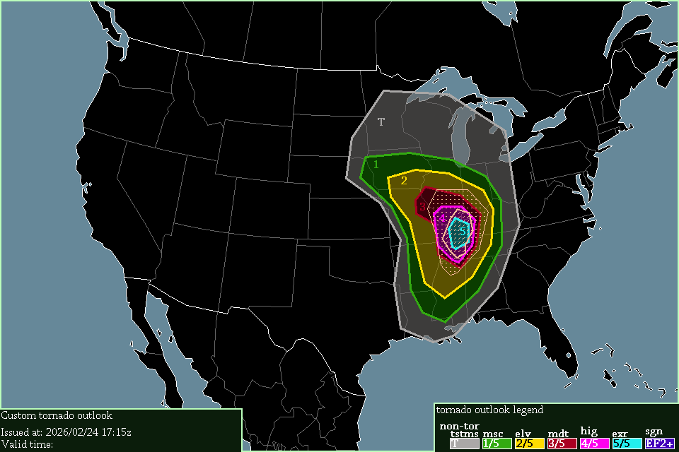

| Name | Abbreviation | Label on maps | Appearance on maps | Comparable to | Short description | Detailed description | Example(s) |
|---|---|---|---|---|---|---|---|
| Non-tornadic thunderstorms | NTR | T | Grey | SPC's TSTM level | Thunderstorms may occur, but no tornadoes | Thunderstorms are either expected or possible in these areas. "Thunderstorms" is very loosely-defined, sometimes this level may be used for big areas of high reflectivity (heavy rain). | Many |
| Minuscule | MSC | 1 | Green | SPC's 2% tor-risk | Tornado(es) may be possible | There is a possibility that a thunderstorm produces a tornado. Usually, Minuscule risks are issued when there is a 20% (low-end MSC) to 60% (high-end MSC) certainty of a tornado occurring. Certainties above 60% may also constitute a Minuscule risk if any tornadoes that occur are likely to be weak. | 2025/09/21, 2026/01/10 |
| Elevated | ELV | 2 | Yellow | SPC's 5% tor-risk | Tornado(es) are expected | 1 or more tornadoes are expected to occur. When multiple tornadoes are certain to occur, usually a Moderate risk is issued instead, except if those tornadoes are likely to be weak. | 2025/09/22, 2025/10/18 |
| Moderate | MDT | 3 | Maroon | SPC's 10% & 15% tor-risks | Tornadoes, maybe significant, are certain | Multiple tornadoes are certain to occur. | 2025/04/05, 2025/04/19 |
| High | HIG | 4 | Pink | SPC's 15% & 30% tor-risks | Many tornadoes, including significant to strong, are certain | Large tornado-outbreak is expected, with many tornadoes certain to occur. Some of these could be significant or strong, & violent tornado(es) may be possible. | 2025/05/16 |
| Extreme | EXR | 5 | Cyan | SPC's 45% & 60% tor-risks | Many tornadoes, including strong to violent, are certain | Massive tornado-outbreak is expected, with many significant & strong tornadoes expected, & violent tornado(es) likely. Many years may not have any Extreme-risk days, & those that do will probably only have 1. | 2011/04/27 |
| Significant tornadoes | SIG or sig-tor | (none) | Beige + horizontal hatching | SPC's CIG1 & CIG2 | Significant tornado(es) likely will occur | Overlaps with numbered levels. These areas indicate that at-least 1 significant tornado is possible or expected. | 2025/05/18 |
| Violent tornadoes | VIL or violent-tor | (none) | Beige + diagonal hatching | SPC's CIG3 | Violent tornado(es) may occur | Overlaps with numbered levels. These areas indicate that at-least 1 violent tornado is possible. | 2025/05/16 |
